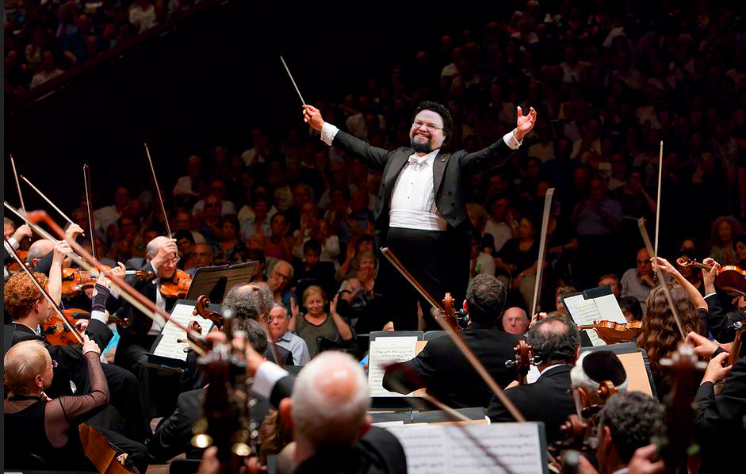

Klassiskt kan vara alldeles oemotståndligt och hur coolt som helst. Samtidigt. Västra Götalands Ungdomssymfoniker är inte bara formidabla musiker utan behärskar också konsten att spela klassiskt på ett sätt som inte lämnar någon utanför.
Musikerna är mellan 14 och 20 år, och för många blir Vägus ett minne för livet. Att vara en del av en symfoniorkester med 80 av Västra Götalands bästa unga musiker är en känsla utöver det vanliga.